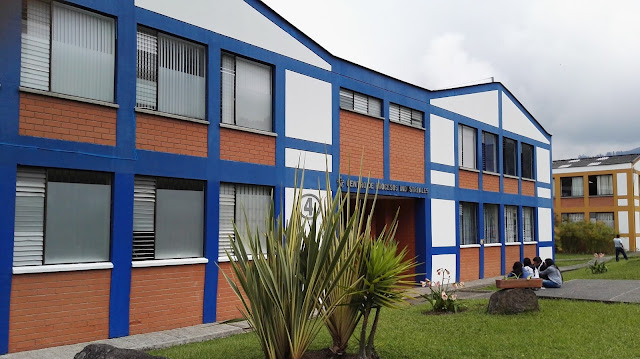
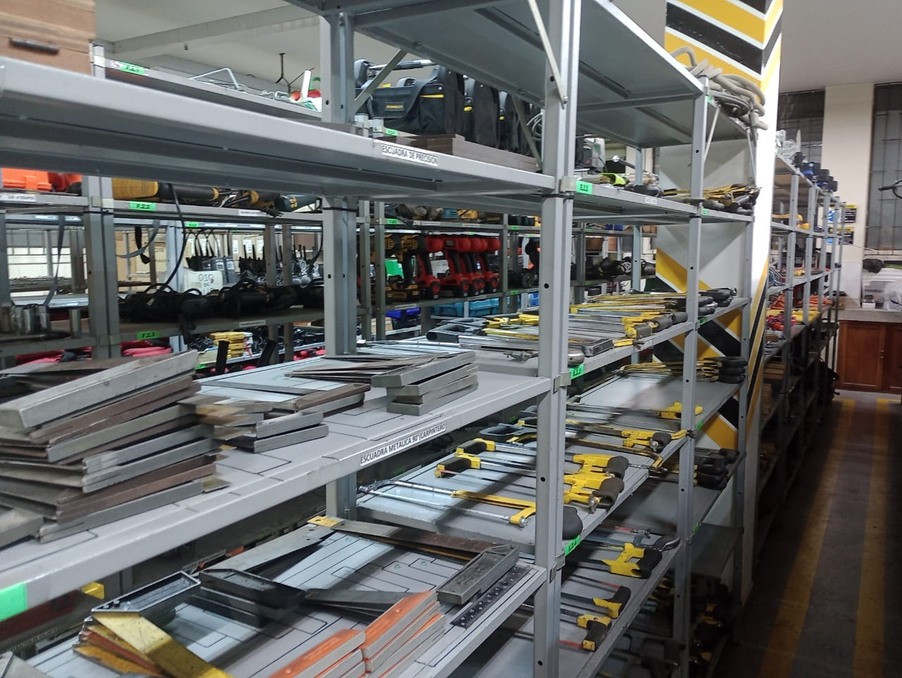
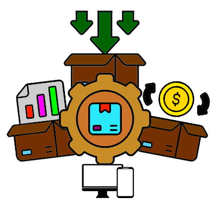

SISTEMA DE GESTION INVENTARIO ALMACEN (SGIA)

Presented by: Dahiana Michel Rave Morales, Juan Manuel Muñoz,
Santiago Arboleda and Julián Dario Londoño
Tabla de contenido
TABLA DE CONTENIDO
INTRODUCCIÓN
La gestión manual actual del CPIC genera ineficiencias y errores. Implementar un sistema digital automatizado mejorará el control, la precisión y la transparencia, optimizando la administración de recursos y agilizando los procesos.

ABSTRACT
CPIC's current manual inventory management leads to inefficiencies and errors. Implementing a digital automated system will enhance control, accuracy, and transparency, optimizing resource management and streamlining processes.
OBJETIVOS
OBJETIVO GENERAL:
Desarrollar un sistema de inventario automatizado en el almacén del CPIC del Sena Regional Caldas que permita tener un control en tiempo real de los niveles de stock, así como de los procesos de préstamos y devoluciones, mejorando la eficiencia en la gestión del suministro de los elementos requeridos en el CPIC
OBJETIVOS ESPECIFICOS:
1. Identificar los requisitos funcionales y no funcionales del sistema de inventario automatizado, incluyendo la recopilación de los procesos actuales, las necesidades del personal del almacén y los usuarios, con el fin de establecer una base sólida para el diseño y desarrollo del sistema.
OBJETIVOS ESPECIFICOS:
2. Diseñar un sistema con una interfaz intuitiva que proporciona acceso a información en tiempo real sobre inventario, préstamos y devoluciones, asegurando una gestión eficiente de suministros en el CPIC
OBJETIVOS ESPECIFICOS:
3. Implementar una solución de seguimiento de inventario en tiempo real que permita un control preciso de los niveles de stock, agilice los procesos de préstamos y devoluciones en el almacén del CPIC del Sena Regional Caldas.
Descripción Del Proyecto
Este proyecto transformará la gestión de inventarios y préstamos en el CPIC del SENA Regional Caldas con un sistema automatizado. Al implementar software especializado, se optimizarán tiempos, mejorará el control en tiempo real y se reducirán errores, garantizando precisión, agilidad y eficiencia. Aplicando el ciclo PHVA, se lograrán mejoras continuas y resultados de alto impacto.
JUSTIFICACIÓN
La gestión manual de inventarios en el CPIC ha generado ineficiencias y errores. Un software especializado automatizará los procesos, mejorando la precisión, reduciendo errores y optimizando la eficiencia. Esto garantizará un control ágil, transparente y adaptable a las crecientes demandas del CPIC.
ANTECEDENTES
Pasado
Segura Vitor (2018): Investigación sobre la Implementación de un SGI Para Control De Bienes En Instituciones Educativas en la U. Peruana Los Andes. Aporta un marco de referencia relevante para comparar enfoques y resultados en la implementación de sistemas de gestión de inventarios en I.E.
2018 - 2020
López Heredia & Domínguez De la Cruz (2018): Desarrollaron un SIGI para optimizar los procesos en la U. Nacional del Santa - Chimbote. Resultados clave incluyen mejoras en el control del inventario, satisfacción y efectividad de los trabajadores, con un ahorro del 41% en el tiempo operativo.
2021 - Presente
Garzón desarrolló un prototipo de software para optimizar el control de inventarios en la empresa Ke-Nice’s, mejorando la eficiencia frente a desequilibrios en su inventario. Este enfoque comparte objetivos similares con la investigación actual, enriqueciendo el desarrollo del sistema propuesto.
ALCANCE
El sistema estará diseñado para adaptarse a las necesidades del SENA, siendo escalable para futuras ampliaciones. Busca transformar la gestión logística, optimizando la disponibilidad de herramientas y materiales, mejorando la experiencia educativa de aprendices e instructores en todos los Centros de la Regional.
TECNOLOGÍAS UTILIZADAS
Backend
base de datos
Frontend


Este sistema optimiza la eficiencia del CPIC, generando beneficios ambientales, tecnológicos, sociales y económicos. contribuyendo al desarrollo sostenible y la mejora educativa
IMPACTO AMBIENTAL
- Reducción del uso de papel
- Optimización del uso de recursos
- Reducción de la huella de carbono
IMPACTO TECNOLÓGICO
- Innovación en la gestión de inventarios
- Fortalecimiento de infraestructuras tecnológicas
- Fomento de la digitalización y automatización
IMPACTO SOCIAL
- Mejora en la eficiencia y servicio
- Acceso más rápido a los recursos
- Capacitación del personal
IMPACTO ECONÓMICO
- Reducción de costos operativos
- Optimización de recursos financieros
- Mejora en la eficiencia logística
GRACIAS
¡Gracias por su atención!
